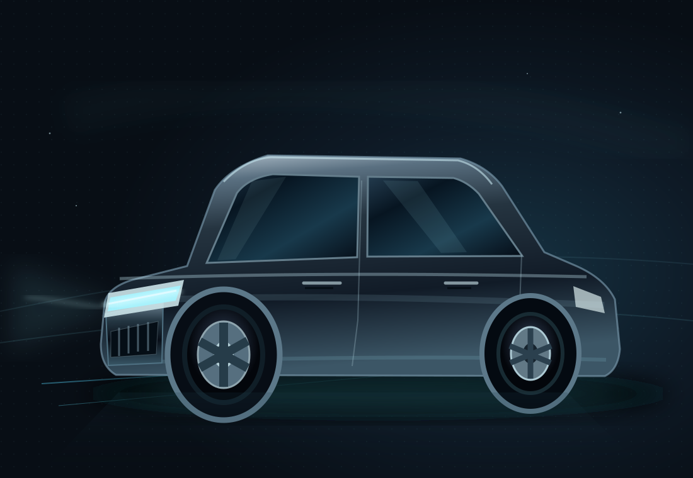
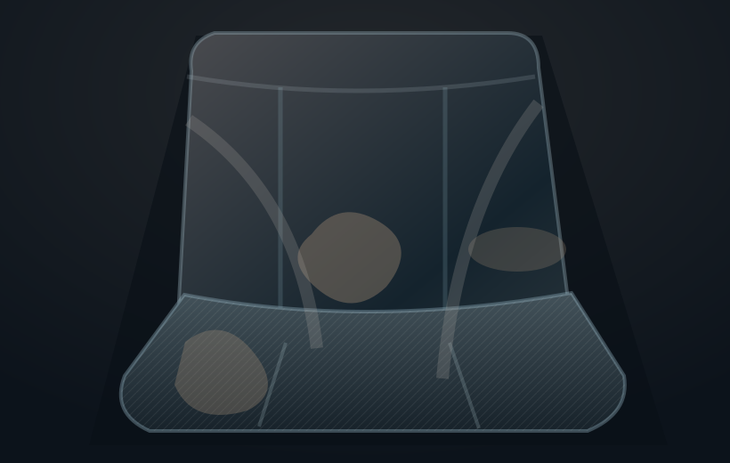
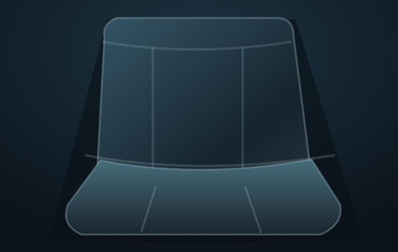

КУЗОВ
Двухфазная мойка
Последовательный уход за кузовом и наружными элементами автомобиля.
ДЕТЕЙЛИНГ-СТУДИЯ · ВОРКУТА
Заботимся о том, что для вас важно. Мойка, химчистка салона, полировка и внимание к каждой детали автомобиля.

КАКОЙ УХОД НУЖЕН ВАШЕМУ АВТО
От аккуратной мойки до подробной работы с салоном и оптикой. Подберём набор процедур под состояние и задачу, а стоимость уточним до записи.
Последовательный уход за кузовом и наружными элементами автомобиля.
Сиденья, ковровые покрытия и поверхности интерьера — объём работ зависит от состояния.
Работа с внешним видом покрытия. Объём полировки обсуждается после осмотра.
Полировка оптики и индивидуальные обращения по освещению автомобиля.
Варианты ухода за стёклами, кузовом и деталями по согласованию.
Ремонт трещин стекла и другие точечные работы — возможность выполнения уточняется.
ПОРТФОЛИО · ПУБЛИКАЦИИ НОЯБРЯ 2026
Ниже — конкретные автомобили и услуги из опубликованных кейсов VRK. Изображения к ним пока авторские иллюстрации, не фотографии клиента.
Реальные публикации в VKДемо-эскизы не воспроизводят реальные автомобили заказчиков. Настоящее портфолио добавляется с разрешения владельца.
Все работы в сообществеВНИМАНИЕ К САЛОНУ
Перед оценкой химчистки важно учитывать материал, характер загрязнения и состояние обивки. Результат всегда зависит от конкретной поверхности и возраста пятен.


Это интерактивная иллюстрация принципа сравнения, а не реальные фотографии «до и после» и не обещание результата.
ПРОГРАММЫ ДЛЯ ЗАПРОСА
Выберите подходящий сценарий ухода — нужные услуги отметятся в форме. Состав работ и стоимость специалист уточняет индивидуально.
Для тех, кто хочет освежить внешний вид автомобиля и обсудить защиту поверхностей.
Когда нужно уделить внимание сиденьям, текстилю и поверхностям внутри автомобиля.
Обсудить сразу несколько работ, как в опубликованных комплексных кейсах.
Это удобные сценарии для подготовки заявки в демоверсии, а не официальные фиксированные пакеты или прайс VRK Detailing.
ВОРКУТА · СЕЗОННЫЕ УСЛОВИЯ
Зимой особенно актуальны видимость, состояние стёкол, замков и чистота кузова. В публикациях VRK есть примеры обработки «Антидождь» и решения проблемы замёрзших дверных замков.
Обсудить сезонный уход Доступность конкретных процедур уточняется при обращении.ПУТЬ ОТ ИДЕИ ДО УХОДА
Марка, модель, состояние, что хотелось бы улучшить.
На фото проще показать загрязнения, повреждения и объём работы.
Уточните стоимость, состав услуг и возможность записи напрямую с мастером.
Место и время визита согласовываются по телефону или через VK.
ПОДБОР УСЛУГ
Подготовьте сообщение мастеру за пару минут. Никаких обязательных аккаунтов, онлайн-оплаты или неподтверждённых цен.
ЧАСТЫЕ ВОПРОСЫ
Ответы относятся к способу обращения через демосайт. Конкретные условия услуг согласовываются с VRK.
Окончательная цена зависит от автомобиля, загрязнений и объёма работы. Выберите услуги, добавьте описание и отправьте запрос мастеру через VK.
Продолжительность зависит от состояния салона, обивки и объёма выбранных работ. Точные сроки и время готовности нужно уточнять при записи.
Результат зависит от материала, состава и возраста загрязнения. Гарантировать полное удаление любого пятна без осмотра невозможно.
Сайт — независимая демонстрационная концепция. Он помогает составить обращение и перейти к реальному контакту компании, но не подтверждает бронирование времени.
Нет. Выбранные фотографии показываются только локально. Отправьте их самостоятельно через VK, если решите обратиться к компании.
В сообществе VRK указан ГСК на бульваре Пищевиков: 3-я очередь, 3-й ряд, гараж 10. Точный маршрут и время приезда лучше уточнить у мастера.
СВЯЗЬ С МАСТЕРСКОЙ
Обсудите услуги, стоимость и удобное время напрямую с VRK Detailing.
Воркута, ГСК на бульваре Пищевиков,
3-я очередь, 3-й ряд, гараж 10